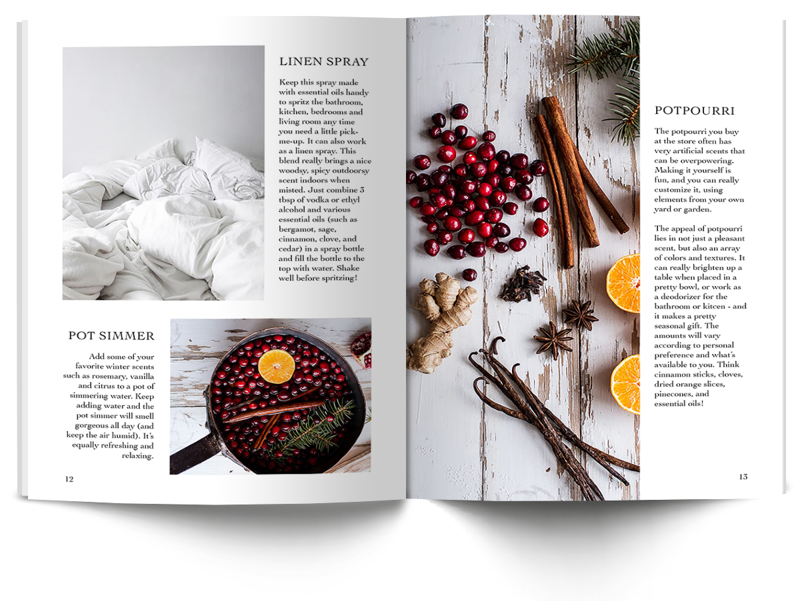

Concept and Curation: Sonali Jain, Esther Klingbiel, Sage Smith
Layout design: Sonali Jain, Sage Smith
Logo: Esther Klingbiel
Content Collection: Sage Smith
Laurel Magazine is a collaborative design project that highlights how lifestyles change with the seasons. For this issue, Winter, we focused on finding an aesthetic middle ground among our project members, through layout design, content, and symbolic markers of identity (typeface, grid, logo, color palette).
I found my project members to have very specific visual styles very early on in our collaboration. Inserting my own personal visual style was a challenging process—in terms of approval and discussion with my colleagues as well as learning that sometimes, less is more.
In my work, I have always tended to emphasize detail. And as all designers can empathize with, the longer you look at your work, the more blind you become to it. For me, this process was important in moving away from my strict ideals of good design and becoming more flexible and open to the suggestions of my peers and mentors.
Another challenge was to create a logo that would visually align to other issues (seasons) of Laurel. The idea here was that the logo would subtlely change with the seasons through it's branch-like visual decoration (for example, in the winter it is bare; in the spring, it sprouts buds).
The Laurel logo went through a lot of complicated and varied iteration—starting off complicated, and with each critique and analysis getting simpler but no less symbolically significant.

Size: A5
Page Count: 50
Binding: Perfect
Typeface: Cochin